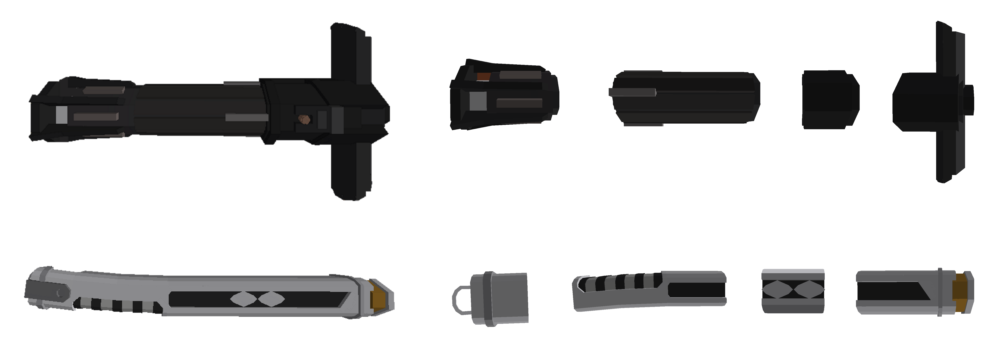

Grade Sénateur
Le grade sénateur vous offre deux parties de sabre légendaire qui sont données dès votre arrivée sur le jeu. Les parties de sabres légendaires sont les suivantes :
De plus, le grade sénateur vous permet d'obtenir un vaisseau low-cost gratuitement (qui coute 32 crédits de gold en jeu). Les vaisseaux sont non seulement un lieu de résidense mais également un lieu de stockage ou vous pourrez garder en toute sécurité les objets que vous possédez.
Les vaisseaux low-cost sont les suivants :
La couleur des réacteurs et la couleur secondaire est customisable sur les deux vaisseaux. Seul la couleur principale du YT-2400 peut être changée avec deux options possibles : Quartz et Sandstone
Pour finir, une tenue légendaire est également offerte suite à l'achat du grade.